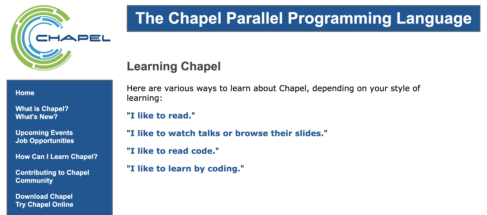

Web Development for Physicists
Rohit Goswami MInstP
Created: 2021-06-26 Sat 12:05
Brief Introduction
Hello!
- Find me here: https://rgoswami.me
- Who?
- Rohit Goswami MInstP
- Doctoral Researcher, University of Iceland, Faculty of Physical Sciences
- Rohit Goswami MInstP


Logistics
- All contents are hosted on GitHub
- Slides have screenshots of existing sites
- These will be discussion topics
- Questions are welcome after / during the lecture
Getting on the Web
Now easier than ever!
Static sites
Hugo
hugo new site quickstart cd quickstart git init cd themes gh repo clone haozeke/hugo-theme-hello-friend-ng-hz cd ../ echo theme = \"hugo-theme-hello-friend-ng-hz\" >> config.toml hugo new posts/my-first-post.md nvm use node npm install postcss-cli autoprefixer hugo server -D
Jekyll

rbenv shell 3.0.1 gem install jekyll bundler jekyll new myblog cd myblog echo "gem \"webrick\"" >> Gemfile bundle exec jekeyll serve # --livereload
Hexo
nvm use node
npm install hexo-cli -g
hexo init blog
cd blog
npm install
hexo server

Gatsby
Deploying

Content Management Systems
Wordpress

Got $$$ ?
- Similar to Ghost, can be self-hosted
- Self hosted
- Pay for a server and web space
Done!
TL;DR go watch the keynote!!
Wait
Still here?
From the Top
But.. getting online is easy!
Why be online?
Cat pictures, communication, online shopping…
Profiles and Platforms
Where will people find you?
- Recruiters, possibly peers
- Talking to people?
- Rage tweeting, shower thoughts
- Tiktok
- Nihilistic people burning server time for eyeballs?
- Orkut
- ????
- Foursquare
- ???
- Misc ???
- Google scholar, Yahoo answers, Quora, Tinder

You are the product, so you conform to the platform
Why have a website?
- Narrative control
- Freedom from being flooded by chaff and trolls
- Constant scratchpad
- Well designed posts can act as notes and mind-dumps
- Content prioritization
- Allows content to be grouped by your needs
The Internet
What it is and why we care.
First Approximation
- Set of networked devices

Finding a Site
ping -c 5 rgoswami.me

Basic Browsing Anatomy
Networking without a terminal
- Uniform resource locator (URL)
- essentially performs a lookup at DNS nameserver
- Server
- Something transmitting information across a network, commonly html, css, js, but also json or tabular data
- Browser
- User facing application to communicate with servers
To get on the internet……
We need to control a URL
What gets rendered

Hypertext Markup Language
Or HTML for structure
Cascading Style Sheets
Or CSS, for presentation
Javascript
Or JS, for executing requests
WAIT!
I don’t want to be a web developer –> We use themes to keep HTML, CSS and JS away from us
Static Site Generators
Stolen from https://netlify.app/jamstack/
User Workflow

JamStack
- Augmented by APIs
Content Considerations
Illustrative example
- Content from https://frinkiac.com/
 =
=
Basic Guidelines
- Do not post a lot of gripes
- Keep a diary instead
- Or twitter or something
- Do not make it hard to navigate
- Do not lie
- Never use pop-ups
- Multiple images go in a gallery
- If its a single image and snark, go for Instagram / Twitter
- Be wary of frameworks
Practicalities
Using JS and other ugly truths
Math
- KaTeX and MathJax
- Compared here (2016)
Syntax Highlighting
- Highlight.js or Prism.js
- Might be native methods too
- Hugo has highlight
- Org has htmlize.el
- Pick a theme which works across backgrounds
- Or use carbon
References
- No real standard
- Pandoc markdown has native support
- Can consider using Zotero reports and embedding
| Jekyll | jekyll-scholar |
| Hugo | hugo-cite (WIP) |
| Pandoc | inbuilt |
Hosting and Domains
- Namecheap is cheap, works well enough
- Netlify is very generous
- SSGs can be built on a CI before pushing to Netlify
Design Discussions
Math and Typography
Wikipedia

No equations

Formula list

Long-form with references

Code and Text
Tensorflow

SSG and Syntax Highlighting
Referencing
Group Publications
- (Femtolab list of publications) Jekyll based, with metadata

Referencing in-posts


Documentation Examples
Chapel Language Documentation
- Single source design
- Link

d-SEAMS documentation
IRHPC documentation
- Uses docusaurus, link here
Conclusions
The world is your oyster.
Not Covered
- Search Engine Optimization
- Making people find you by accident better
- RSS Feeds
- Retaining an audience and random marketing things
- Writing
- No style can be universally approved
- Comments
- Engagement with filters (Utteranc.es, GraphComment, Remarkbox, anything but Disqus)
- Search
- Static searches can be complicated, Fuse.js and Stork are neat
- Analytics
- Spying on those who spy on you
- Workflows
- Paucity of time, surfeit of generality
Thanks!
Questions?
Web Development for Physicists Rohit Goswami MInstP Created: 2021-06-26 Sat 12:05